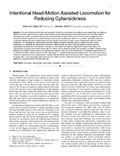
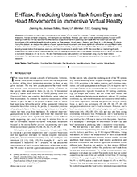
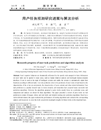

科研项目
EHTask, 2021
针对用户在虚拟现实环境中，执行不同任务时的视觉注意进行了详尽的分析，提出了一个基于学习的用户任务预测模型。 该模型从用户的头部运动和眼睛运动数据中提取了相应的特征，来预测用户正在执行的任务。 创新点在于首次针对虚拟现实环境中不同任务下的用户视觉注意进行了分析，并首次提出了一个针对虚拟现实环境、基于学习的任务预测模型。 该模型在虚拟现实和真实世界中的表现都显著地好于之前的方法。FixationNet, 2021
针对任务驱动虚拟场景，提出了一个基于学习的注视预测模型FixationNet。 该模型结合了用户过去时刻的眼动位置、任务相关的物体、虚拟现实内容的显著性信息、以及用户的头部运动来预测用户在未来时刻的注视。 创新点在于首次研究了任务驱动虚拟场景中用户注视预测的问题，并首次提出了一个针对任务驱动虚拟场景、基于学习的注视预测模型。 在自由观察场景与任务驱动场景中，该模型的预测效果都显著地好于之前的方法。 该工作荣获TVCG最佳期刊论文提名奖。DGaze, 2020
针对动态虚拟场景，提出了一个基于卷积神经网络的注视预测模型DGaze。 该模型结合了动态物体位置、用户头部运动、以及场景内容的显著性特征来预测用户的注视位置。 创新点在于首次提出了针对动态虚拟场景、基于卷积神经网络的注视预测模型，并且首次结合了场景中动态物体的位置信息来预测用户的注视。 该模型在动态虚拟场景和静态虚拟场景中的预测效果都显著地优于之前的方法。项目主页： cranehzm.github.io/DGaze
SGaze, 2019
针对静态虚拟场景，提出了一个基于眼动头动协调性的注视预测模型SGaze。 该模型可以在不使用眼动仪的情况下，预测用户在静态虚拟场景中的注视位置。 创新点在于首次发现了虚拟现实环境中用户的注视与其头部运动之间的协调性，并首次提出了基于眼动头动协调性的注视预测模型。 与之前方法相比，该模型具有更高的预测精度。项目主页： cranehzm.github.io/SGaze
实习经历
基于深度学习的图像编解码，华为中央媒体技术院，2021.8 - 2021.9
采用基于深度学习的Encoder-Decoder框架进行图像的编解码。通过同时优化Encoder部分输出特征的熵和Decoder部分输出图像的保真度来实现图像的编解码。 相比于传统的图像编码算法（JPEG，JPEG-2000），基于学习的算法在压缩率-保真度曲线上，具有更加优越的表现。
发表文章

Intentional Head-Motion Assisted Locomotion for Reducing Cybersickness
Zehui Lin, Xiang Gu, Sheng Li,
Zhiming Hu,
Guoping Wang
IEEE Transactions on Visualization and Computer Graphics, 2022 (CCF A)

EHTask: Recognizing User Tasks from Eye and Head Movements in Immersive Virtual Reality
Zhiming Hu,
Andreas Bulling, Sheng Li, Guoping Wang
IEEE Transactions on Visualization and Computer Graphics, 2022 (CCF A)

Research progress of user task prediction and algorithm analysis (in Chinese)
Zhiming Hu,
Sheng Li, Meng Gai
Journal of Graphics, 2021
 Eye Fixation Forecasting in Task-Oriented Virtual Reality
Eye Fixation Forecasting in Task-Oriented Virtual Reality
Zhiming Hu
Proc. IEEE VR Abstracts and Workshops (VRW), 2021 (CCF A, Poster)
 FixationNet: Forecasting Eye Fixations in Task-Oriented Virtual Environments
FixationNet: Forecasting Eye Fixations in Task-Oriented Virtual Environments
Zhiming Hu,
Andreas Bulling, Sheng Li, Guoping Wang
IEEE Transactions on Visualization and Computer Graphics, 2021 (CCF A, TVCG Best Journal Nominees Award)
 Gaze Analysis and Prediction in Virtual Reality
Gaze Analysis and Prediction in Virtual Reality
Zhiming Hu
Proc. IEEE VR Abstracts and Workshops (VRW), 2020 (CCF A, Poster)
 DGaze: CNN-Based Gaze Prediction in Dynamic Scenes
DGaze: CNN-Based Gaze Prediction in Dynamic Scenes
Zhiming Hu,
Sheng Li, Congyi Zhang, Kangrui Yi, Guoping Wang, Dinesh Manocha
IEEE Transactions on Visualization and Computer Graphics, 2020 (CCF A)
 Temporal continuity of visual attention for future gaze prediction in immersive virtual reality
Temporal continuity of visual attention for future gaze prediction in immersive virtual reality
Zhiming Hu,
Sheng Li, Meng Gai
Virtual Reality & Intelligent Hardware, 2020
 SGaze: A Data-Driven Eye-Head Coordination Model for Realtime Gaze
SGaze: A Data-Driven Eye-Head Coordination Model for Realtime Gaze
Prediction
Zhiming Hu,
Congyi Zhang, Sheng Li, Guoping Wang, Dinesh Manocha
IEEE Transactions on Visualization and Computer Graphics, 2019 (CCF A)
上次修改时间：2021/12/05